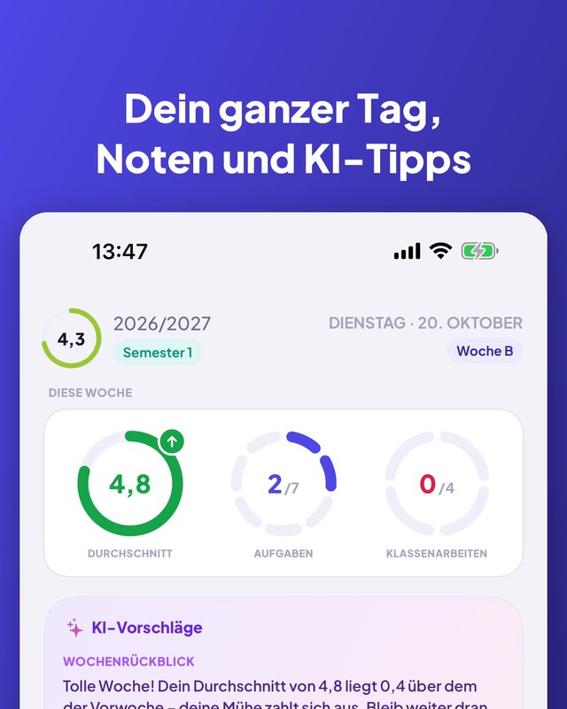
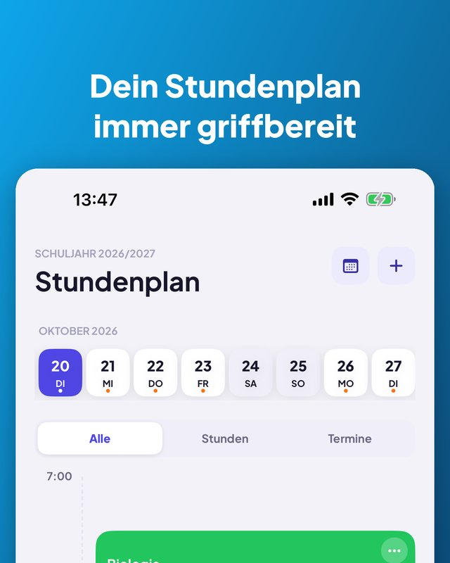
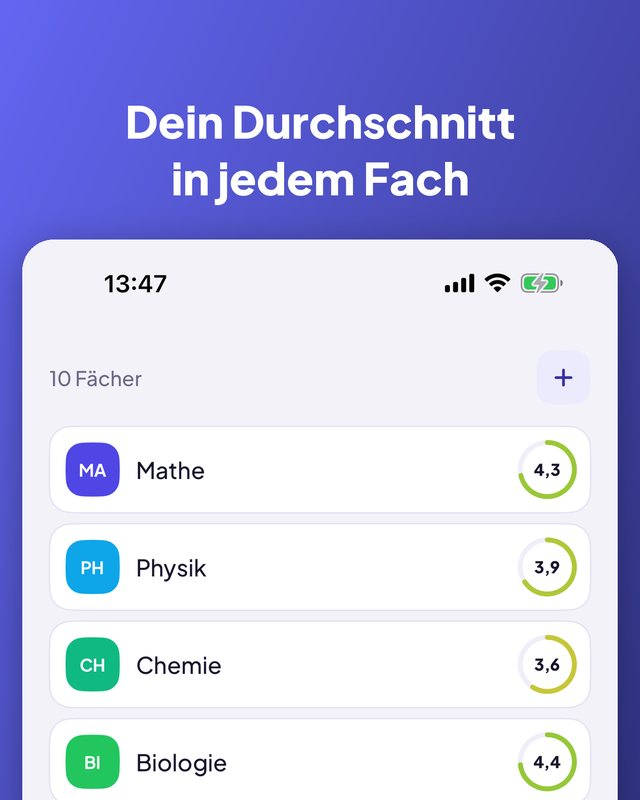
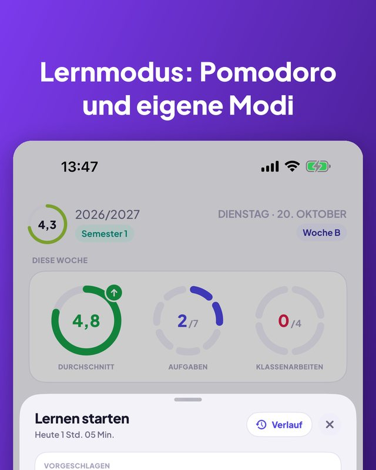
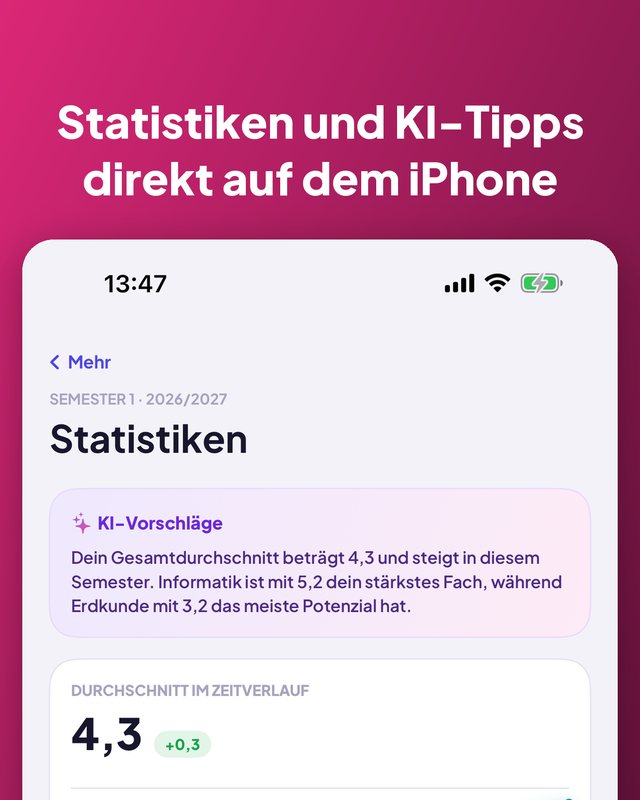

Kajet ist ein Planer für Schule und Studium. Dein ganzer Tag auf einen Blick, Noten mit Durchschnitt, Hausaufgaben und Klassenarbeiten mit Erinnerungen und ein Lern-Timer mit Pomodoro. Ohne Konto, ohne Werbung.


Tages- und Wochenansicht, Räume, Zeiten.
Ausfall, Vertretung oder anderer Raum für einen Tag.
Sport, Musik, Nachhilfe, mit Erinnerung zum Losgehen.
Die nächste Stunde auf Home- und Sperrbildschirm.
Eigene Kategorien, Kommentare und Nachschreiben.
Verlauf, bestes Fach, was den Schnitt drückt.
Credits, Endnoten, ECTS-gewichteter Schnitt.
Schwelle festlegen und sehen, welche Noten noch fehlen.
Heute, morgen, diese Woche, später. Mit einem Tipp abhaken.
Ein oder drei Tage vorher, abends oder zu deiner Zeit.
Countdown oder Pomodoro, mit einer Klassenarbeit verknüpft.
7 Tage, ein Monat oder ein Semester, nach Fach.
Wochenübersicht und wann du lernen solltest. Nur auf deinem iPhone.
Frag nach der nächsten Stunde oder füge per Sprache eine Note hinzu.
Ein neues startest du, indem du das letzte kopierst.
Folgt der Sprache deines iPhones.



App, Widget, Siri und Kurzbefehle gibt es in 13 Sprachen. Kajet folgt der Sprache deines iPhones.
Kein Konto, keine Werbung, und deine Daten bleiben bei dir.
Entwickelt mit Blick auf das polnische Schul- und Hochschulsystem (Noten 1–6, die Hochschulskala 2,0–5,0, ECTS), aber überall nutzbar. Für das iPhone mit iOS 17 oder neuer; die KI-Tipps brauchen iOS 26 und Apple Intelligence.